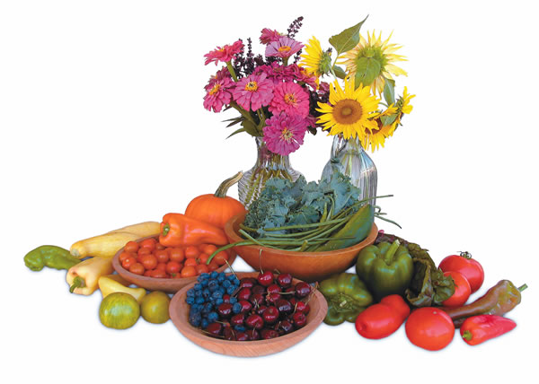
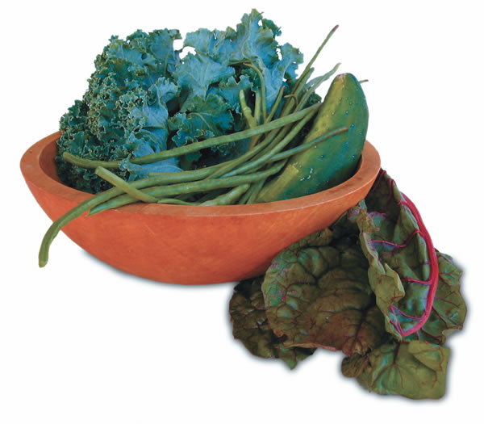

The phrase “Eat your vegetables, they’re good for you” springs out of the parent’s mouth unbidden, like wisdom that must be passed from generation to generation. That’s actually pretty accurate. “Eat plenty of fruits and vegetables” is timeless advice that science is only now catching up to.
A diet rich in fruits and vegetables can decrease the chances of having a heart attack or stroke; lower blood pressure; help you avoid constipation; guard against two common aging-related eye diseases?-? cataracts and macular degeneration; help you feel full with fewer calories; add variety to your diet and enliven your palate.
Potatoes Don’t Count
To a botanist, a fruit is any plant part that contains seeds. In this article, I will stick with the culinary concept of fruits as sweet dessertlike foods, and vegetables as savory salad- or dinner-type foods. I am not including potatoes in the vegetable category, even though they are the most popular vegetable in America. Like rice and pasta, potatoes are made up mostly of easily digested starch. Studies show that eating potatoes isn’t linked with the same health benefits as is eating other vegetables and fruits.
Back in 1991, the National Cancer Institute launched its 5-a-Day public health campaign, urging us to eat five servings of fruits and vegetables a day. This campaign has been incorporated into the government’s Dietary Guidelines for Americans. Five a day is a good start, but it gives no real guidance on what qualifies. Two glasses of orange juice, an apple, an order of french fries at lunch and potatoes with dinner meets the 5-a-Day target. While that’s better than no fruits and vegetables at all, it doesn’t offer the full dose of health benefits described here. Use five a day as a minimum, not a goal. Don’t include potatoes in your daily tally, and try to vary the fruits and vegetables in your diet.
While any one fruit or vegetable contains dozens, maybe hundreds, of different compounds that your body uses for something besides energy, no single fruit or vegetable contains all the substances you need. It’s a good idea to eat for color variety as well. Painting your diet with the bold colors of ripe red tomatoes, crisp orange carrots, creamy yellow squash, emerald-green spinach, juicy blueberries, indigo plums, violet eggplants and all shades in between not only makes meals more appealing, but also ensures that you get a variety of beneficial nutrients.
Many Health Benefits
Prevent heart disease. A diet that includes plenty of fruits and vegetables can help control or even prevent two of the main precursors of heart disease and stroke: high blood pressure and high cholesterol. Even better, investing in a plant-rich diet pays off in terms of lowering your chances of developing several forms of heart disease and stroke.
By combining the results of 17 large, long-term studies, researchers estimated that people in the top tier of fruit and vegetable consumption (about 35 servings a week or your basic five a day) are 15 percent less likely to have a heart attack or other problem caused by restricted blood flow to the heart muscle than those in the bottom tier. Among more than 100,000 men and women participating in the Harvard School of Public Health’s Nurses’ Health Study and the Health Professionals Follow-up Study, we found that eating about 30 servings of fruits and vegetables a week (or just under five a day) was associated with a 30-percent lower risk of the most common type of stroke (ischemic stroke), the kind caused by a blood clot blocking an artery in, or to, the brain. We calculated that eating one extra serving of fruits or vegetables a day decreases the chances of having an ischemic stroke by about 6 percent. In this study, most of the benefit seemed to come from eating broccoli, spinach, kale, romaine lettuce, and citrus fruit or juice.
Keep your eyes healthy. This goes way beyond the admonition to eat carrots for better vision (actually better night vision). A number of studies now show that people who regularly eat dark-green leafy vegetables such as spinach and collard greens are less likely to develop two common aging-related eye diseases?-?cataracts and macular degeneration. In both diseases, free radicals are believed to be responsible for causing much of the damage. Free radicals are highly reactive substances generated inside the eye by bright sunlight, cigarette smoke, air pollution and infection. Dark-green leafy vegetables contain two pigments, lutein and zeaxanthin, that accumulate in the eye. These two can snuff out free radicals before they can harm the eye’s sensitive tissues
Avoid bowel trouble. Fiber sops up water like a sponge and expands as it moves through the digestive system. By triggering regular bowel movements, fiber can relieve or prevent constipation. The bulking and softening actions of fiber also decrease pressure inside the intestinal tract and so may help prevent diverticulosis (the development of tiny, easily irritated pouches inside the colon) and diverticulitis (the often painful inflammation of these pouches).
Cancer-fighting Foods?
Twenty-five years ago, two eminent epidemiologists estimated that “dietary factors” accounted for 35 percent of cancer deaths in the United States, or roughly the same amount as were chalked up to smoking at the time. While 35 percent may be overly optimistic, the basic message that better diets?-?heavy on the plant foods, please?-?help guard against a variety of cancers is perfectly sound.
So far, more than 200 studies have looked at the connection between diets high (or low) in fruits and vegetables and the development of cancer. Initially, they estimated a 50-percent reduction in most major cancers if everyone got at least five servings of fruits and vegetables a day. That was the basis of the National Cancer Institute’s ongoing 5-a-Day program.
Most of the early studies were case- control studies. In a nutshell, these involve comparing differences in diet, habits and other possible causes of cancer between a group of people with a particular cancer and a group without it. Such comparisons aren’t always fair or without bias. People with cancer, for example, tend to seek reasons for why they were stricken and may be more apt to find fault with their diets than those without the disease. The consistency of results from case-controlled studies created a deceptively strong idea that eating plenty of fruits and vegetables helped ward off cancer.
Cohort studies, in which information on diet and other lifestyle factors are collected before cancer, heart disease and other conditions occur, tend to give more reliable and durable results. Not long ago, our team at the Harvard School of Public Health combined information on fruit and vegetable consumption and cancer from our two large cohort studies after the 110,000 participants had been followed for almost 20 years. During this time, 9,100 had developed some type of cancer. Those who averaged eight or more servings of fruits and vegetables a day developed cancer at about the same rate as those who ate fewer than one-and-a-half servings a day.
Does this mean that eating fruits and vegetables has no impact whatsoever on cancer risk? No. Although they don’t have a blanket anti-cancer effect, fruits and vegetables may work against specific cancers. The International Agency for Research on Cancer commissioned an exhaustive review of the hundreds of case-control and cohort studies that have looked at fruit and vegetable consumption and cancer over the years. Drill down a bit into the data and there’s some evidence that certain types of fruits or vegetables work against specific cancers. Examples include the following:
• Eating cruciferous vegetables such as broccoli has been linked to lower rates of bladder cancer.
• There is strong evidence that the vitamin folic acid helps protect against colon and rectal cancer. Vegetables such as spinach and beets are good sources of folic acid.
• Lycopene from tomatoes and cooked or processed tomato products such as tomato sauces or ketchup seems to be helpful in the prevention of prostate cancer.
Putting it into Practice
There isn’t any magic daily number or combination of fruits and vegetables for optimal health. Instead, I offer two words of advice: more and different.
Aim high. Use five servings a day as a minimum goal and shoot for more.
Eat for variety and for color. On most days, try to get at least one serving from each of the following fruit and vegetable categories:
• dark-green, leafy vegetables.
• yellow or orange fruits and vegetables.
• red fruits and vegetables.
• legumes (beans) and peas.
• citrus fruits.
Cook your tomatoes. Treat yourself to tomatoes, processed tomatoes or tomato products cooked in oil on most days. Tomatoes are rich in lycopene, a powerful antioxidant that has been linked with lower rates of a variety of cancers. Because lycopene is tightly bound inside cell walls, your body has a hard time extracting it from raw tomatoes. Cooking breaks down cell walls, and oil dissolves lycopene and helps shuttle it into the bloodstream.
Fresh is better. Eat several servings of fresh, uncooked fruits and vegetables each week because cooking damages or destroys some important nutrients. Vitamin C and folic acid, for example, are sensitive to heat. Truly fresh fruits and vegetables add enormously to the pleasure of eating a healthy diet. The freshest produce is what you grow yourself and pick just before you eat it.?
Walter C. Willett, M.D., is chair of the Department of Nutrition at the Harvard School of Public Health and a professor of medicine at the Harvard Medical School.
|
 Eating fresh foods - especially those straight from the garden - is one of the most enjoyable aspects of a healthy diet. |
 |
|